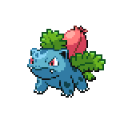

East Gearen City Gym
Facilities

There are a few facilities we can use here inside the gym. First, on the right side is a Healing Machine, as well as a Pokemon Box. You can come here at anytime to heal up your Pokemon. On the left side, you'll find a Gym Panel, which you can access to talk to Jan. He'll give you information about Venam's Ace, as well as her the field she uses. Once you're ready, let's head on and solve the gym puzzle.
The Gym Puzzle
| Trainer | Location |
Enthusiast Luca |
Gearen Gym (First Room) |
Hardcore Trainer Reina |
Gearen Gym (Second Room) |
Hardcore Trainer Lenny |
Gearen Gym (Second Room) |
Guitarist Natalia |
Gearen Gym (Third Room) |
This gym is centered around colors, and you have to mix certain colors to open the path to the next room. As to what colors you want as a result, you'll need to defeat the gym trainers to find out. In the first room, defeating Enthusiast Luca
will let you know that you need the color Magenta to progress. Magenta is made by mixing Red and Blue, so interact with those to colors then interact with the console in the back. Stairs should appear when you successfully complete the puzzle.
The second room has two trainers, and you'll need get two colors in a certain order to progress. Defeat Hardcore Trainer Reina
to learn that the first color is Orange, and then defeat Hardcore Trainer Lenny to learn that the second color is Green. That would be Yellow + Red and Yellow + Blue respectively.
The final room has only one trainer, who will give you the three colors needed to progress, so go ahead and battle Guitarist Natalia.
She'll let you know that the three colors in order are Orange, White, and Teal. That would be Red + Yellow, Red + Blue + Green, and then Green + Blue. Before you move on though, there's a secret in this room if you mix three other colors. If you talk to the person in the lobby, you'll learn that the first color needed is Brown. There's two more hidden instructions in the city, but if you just want to know the secret then its Brown (Red + Green), White (Red + Green + Blue), and Orange (Red + Yellow). Upon finding the secret combination, a door will open beside the computer, and if you follow it you'll reach a secret area. Venam will come explain the area to you, and you'll be able to pick up the Seviper Egg in the area.
in the area.
With that done, step back into the final puzzle room, and head upstairs. You can use the warp panel to warp back and forth between the entrance and here. Once you're ready, head inside to battle Venam.
VS - Gym Leader Venam

Punk Girl Venam

Trubbish, Level 13 - Oran Berry |
Poison | Venam's Kiss |
|---|---|---|
| Rock Blast | ||
| Thief | ||
| Poison Gas | ||
|
Mareanie, Level 14 |
Poison | Water Pulse |
| Venoshock | ||
| Water | Recover | |
| Toxic Spikes | ||
|
Alolan Grimer, Level 14 - Oran Berry |
Poison | Poison Fang |
| Shadow Sneak | ||
| Dark | Bite | |
| Acid Armor | ||
|
Whirlipede, Level 15 |
Bug | Twineedle |
| Venoshock | ||
| Poison | Bulldoze | |
| Venom Drench | ||
|

Ivysaur, Level 15 - Berry Juice |
Grass | Venam's Kiss |
| Razor Leaf | ||
| Poison | Leech Seed | |
| Poison Powder | ||
|
Seviper, Level 16 - Sitrus Berry |
Poison | Venam's Kiss |
| Bulldoze | ||
| Bite | ||
| Glare | ||
Reward:  304 304
|
||
Gym battles in this game will always have two things. First, each gym leader has their own, unique move that a lot of their Pokemon learn. For Venam, this comes in the form of Venam's Kiss, a basic 75-base damage move without any other special effects. The second is that the field is always in favor of the gym leader. Venam fights in a Corrosive Field, which will damage all your non-grounded non-Poison type Pokemon upon switching in. In addition, a lot of Ground type moves will turn into Poison type moves, such as Mud-Slap, Mud Shot, or Mud Bomb. Poison type moves and Pokemon in general become more effective, for example Venoshock always treats the opposing Pokemon as poisoned, thus dealing double damage.
That being said, the game eases you into the battles. Venam's team can definitely rough you up. All of her Pokemon aside from Whirlipede can set up or debuff you in some way, and a lot of her Pokemon also carry Bulldoze to make up for the team's relatively low speed. Ivysaur and Whirlipede are pretty bulky at this stage in the game, and Seviper, as a fully evolved Pokemon, has really good base stats out of the gate. If you've been battling and doing sidequests though, then your Pokemon should overlevel her at this point. Psychic types are very helpful in this fight, so, like Jan advised, catching a Woobat in the Sewers or getting a Spoink from the Casino could be good options. A lot of Bug Pokemon also learn moves such as Confusion or Psybeam, which can work wonders against Venam's team as they don't really have much to hit Bug types super effectively. As long as you come in with a strategy, whether its Psychic types or just plain outmuscling Venam, you should be fine.
Once the battle is over, Venam will give you the PoisonHeart Badge, raising your level limit to level 25. Venam lets you know that her and Ren will be heading over to Route 2, and that you can join them if you want. As Venam leaves, the title card for Chapter 2 will play.
<< East Gearen City - Sidequests After the First Badge >>
×
Event Pokemon - Gained through Other Means
| Pokemon Name | Location | Other Requirements |
|---|---|---|
|
#336 Seviper Seviper, like many other no evolution Pokemon, comes out of the gate swinging with 100 base Attack and Special Attack. It's movepool is decent, leaning Glare and Poison Fang at levels 19 and 21 respectively. At level 26, it gets Night Slash which lets it deal with Psychic types well. It has a decent defensive stats as well, but a lower speed compared to other Pokemon with its stat spread. This means that, despite its decent bulk, it'll take hits before being able to dish out any. It also doesn't have any natural recovery, so you'll be relying on items to bring its health back up once it goes low. Ultimately, it's definitely a viable Pokemon, especially if you need an early Poison type as it outclasses the rest of the field right now. |
Venam's Gym - Secret Room | Solve the extra gym puzzle |